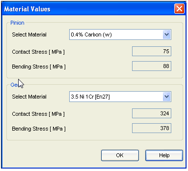
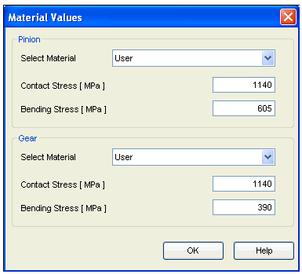

Bevel Gear Material selection
The Material button is given on Design Parameters tab to select the material of the Gears.
Click on this button, the Material Selection window will open.
You have to select the material of the Pinion and the Gear.
SEER has given some standard materials for calculation purpose.
Standard Material
Simply select the material from respective material selection control. The values for Contact Stress and Bending Stress will be automatically displayed as per the material, which are stored in database. Remember when you are using SEER Standard material you cannot change these values.

User Specific Material
In case you want to enter your own values, then you have to select a User material from material selection control.
Now the entry field for Contact Stress and Bending Stress will get enabled and you can enter own values.

The Gear materials specified in Engineering Reference are for guidance only and can be used for general calculations purpose.
The strength values given are lower values for safety. All the strength values are based on the equivalent or near equivalent foreign standards. This is due to lack of sufficient experimental data.
As regards to the steel shown with heat treatment, the strength values are typical values obtained after heat treatment, therefore it apparently looks En8D - normalized is having more strength than En24 (Without heat treatment).
The values of permissible bending strength also may vary depending on loading condition.
So for more accurate results you are advised to refer to manufacturers data.